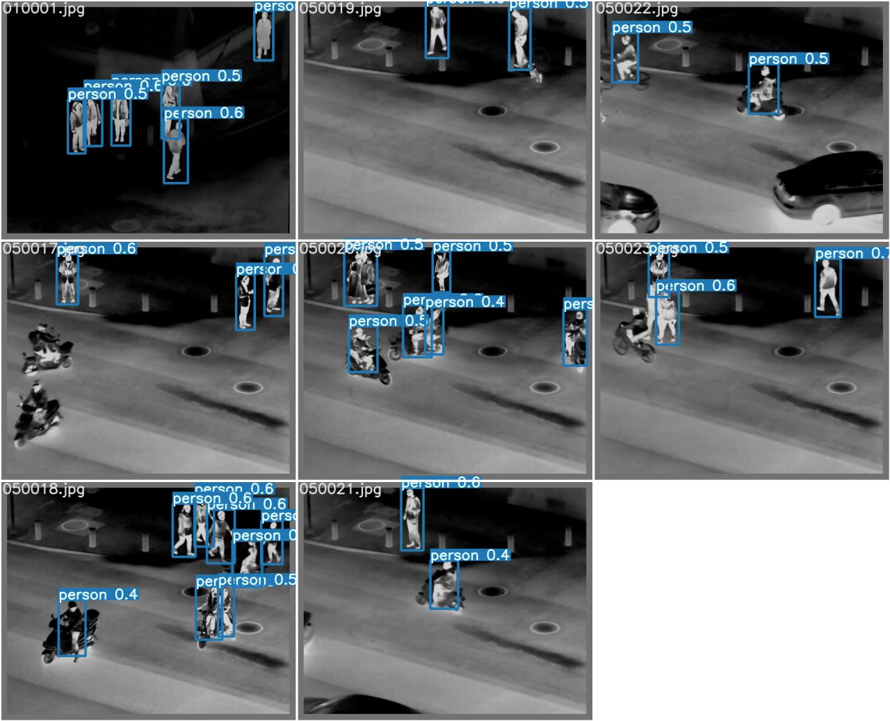
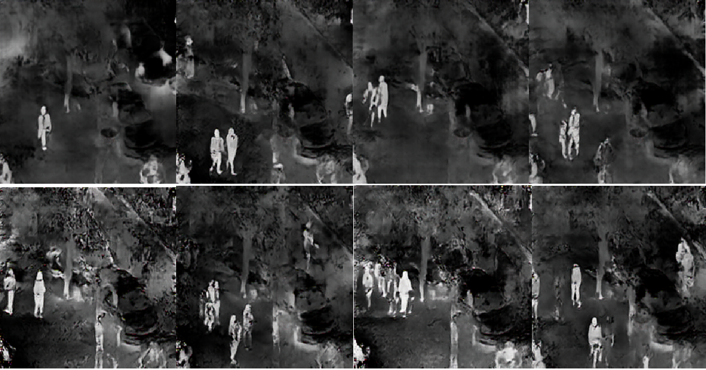
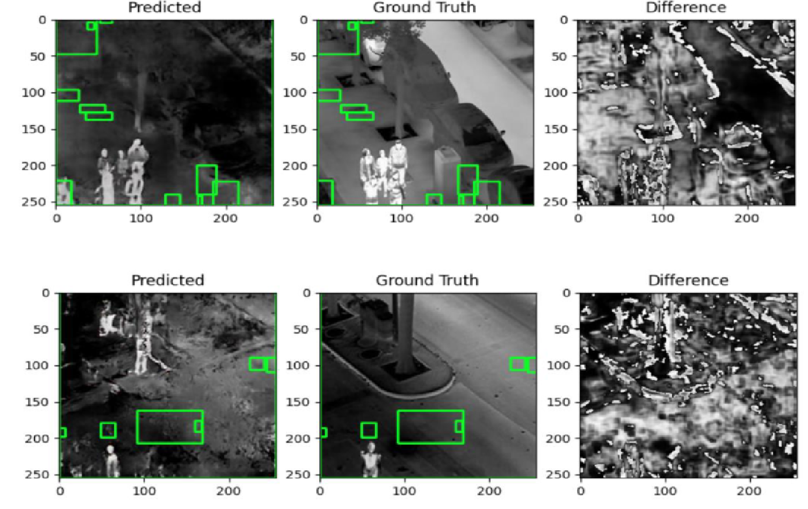

Object detection with Yolov7 on thermal images.

Generated thermal images with using pix2pix.

Generated thermal images with using CycleGan.

With the development of computer vision, machine learning and artificial intelligence, object detection has developed and has become an important position today. Object detection with cameras is especially important in the defense industry and traffic. When we started our project, we set out to get better results in object detection.
First of all, in our research on the internet, we realized that with thermal images, object detection can be done with a higher success rate than RGB images. To verify this, we conducted experiments on the LLVIP dataset, which includes 12025 image pairs of the same image pairs taken with the RGB and thermal camera with Yolo v7 in the first semester. We also wanted to further consolidate the results we will obtain by using the FLIR Thermal Dataset. In these experiments we conducted with Yolo v7, we clearly saw that object detection, especially human detection, in thermal images can be achieved with a better success rate than RGB images. On top of that, in the second semester, we aimed to obtain thermal images from RGB images by using various GAN implementations, and thus to enable more successful object detection. We decided to use pix2pix and CycleGan for this. Again, using the same LLVIP dataset, we obtained thermal images from RGB images. We did our pix2pix and CycleGan experiments using Google Colab, as we did not have machines with the necessary equipment. For this, we used the paid pro version of Colab, but in this way, we could not train our dataset exactly as it should be, since Colab gives a certain usage limit. Although people usually appear clearer in the thermal images we obtained, the generality of other objects was not completely clear. With the thermal images we obtained, we again carried out object detection experiments in Yolo v7 and although we did not achieve very good results, we obtained promising results. We have seen that with the necessary hardware, we can produce thermal images with higher object detection success than RGB images with a larger dataset and more epoch numbers.